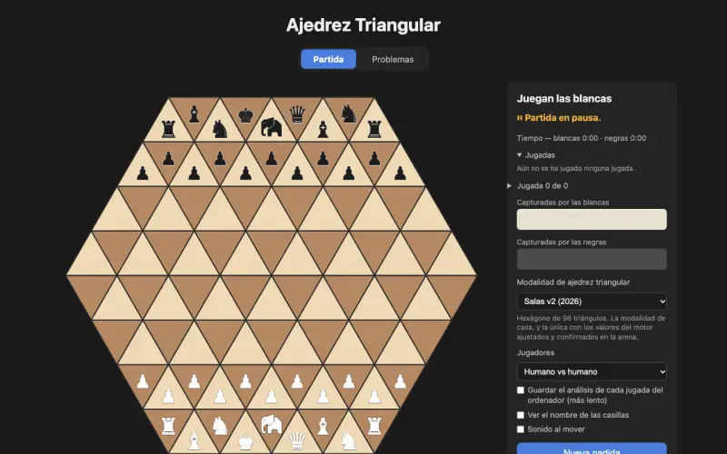

Ajedrez triangular
- 2 jugadores
- contra el ordenador
- problemas
Ajedrez sobre un tablero de triángulos. La primera versión es de 1998; la de 2026 juega en un hexágono de 96 casillas con un elefante en la fila de atrás. Incluye otras modalidades de ajedrez triangular, un motor para jugar contra la máquina y una colección de problemas.